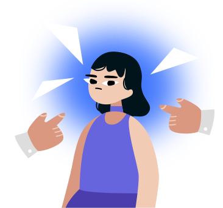

Этап 1 из 4
Интерактивный разбор для HR
Не «чините» сотрудника
Инструмент помогает разобрать запрос руководителя «разберитесь с сотрудником». За 7–10 минут он проверит факты, рабочий контекст и распределение ответственности, а затем предложит вопросы для разговора и следующие шаги.

Без ярлыковПереведем общую оценку в наблюдаемую ситуацию.
Без догадокНеизвестное останется неизвестным и превратится в вопросы для проверки.
С планом действийВы получите шаги для руководителя, HR и сотрудника.
На чем основаны рекомендацииИнструмент разработан «Alter для бизнеса» на основе принципов организационной психологии и международных подходов к управлению психосоциальными рисками на работе: стандартов HSE по управлению рабочим стрессом, ISO 45003, рекомендаций ВОЗ и NICE. Он проверяет не только поведение сотрудника, но и нагрузку, ясность роли, доступные ресурсы, действия руководителя, командные процессы и изменения в компании. Инструмент не ставит диагнозы и не оценивает личность. Он помогает HR собрать факты и выбрать следующий шаг.
Обычно 7–10 минут